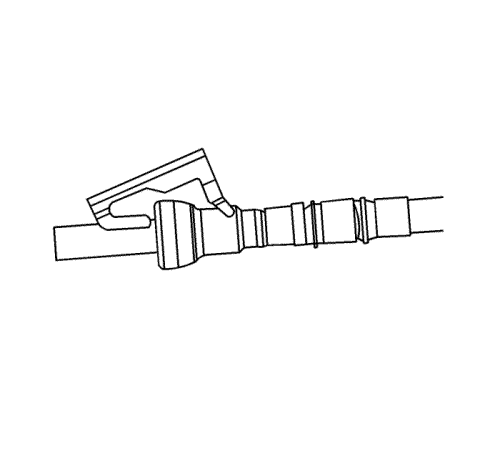
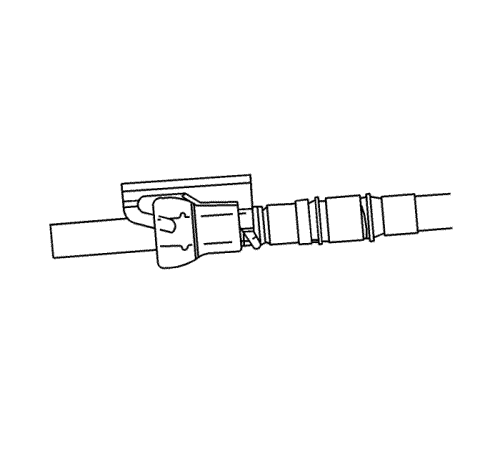

Reparación del acoplamiento rápido con collar metálico
Herramientas especiales
| • | CH-41769 Conjunto de herramientas de separación de la tubería de combustible |
| • | CH-44581 Herramienta de separación de la tubería de combustible |
Si desea informarse sobre herramientas regionales equivalentes, consultar Herramientas especiales .
Procedimiento de desmontaje
Advertencia: Consulte Advertencia sobre la gasolina y sus vapores en la sección Prólogo
- Despresurice el sistema de combustible. Consultar Descarga de la presión del combustible .

- Retire el soporte de la fijación de acoplamiento rápido.

Advertencia : Póngase gafas de seguridad cuando vaya a usar aire comprimido, ya que pueden salir despedidas partículas de suciedad y dañarle los ojos.
- Saque la suciedad de la fijación soplándola con aire comprimido.

- Dependiendo del tamaño de la tubería de combustible y de la capacidad de acceder a la fijación, escoja la herramienta adecuada: conjunto de herramientas de separación de la tubería de combustible CH-41769 o la herramienta de separación de la tubería de combustible CH-44581. Inserte el conjunto de herramientas de separación de la tubería de combustible CH-41769 o la herramienta de separación de la tubería de combustible CH-44581 en el conector hembra, después empuje hacia dentro para soltar las lengüetas de bloqueo.

- Separe la conexión.
Atención: Si es necesario, quite el óxido o las rebabas de los tubos de combustible con un papel de lija. Realice un movimiento radial con el extremo del tubo del combustible para evitar que se produzcan daños en la superficie de sellado de la junta tórica. Utilice una toalla de uso industrial para limpiar los extremos macho del tubo. Compruebe que no queda suciedad ni rebabas en ninguna conexión. Limpie o sustituya los componentes y conjuntos según convenga.
- Pase un paño limpio por el extremo macho del tubo.
- Inspeccione los dos extremos del cierre por si hubiera suciedad o rebabas.
- Limpie o sustituya los componentes según sea necesario.
Procedimiento de montaje

Advertencia: Para reducir el riesgo de incendio y lesiones, aplique siempre unas gotas de aceite de motor limpio en los extremos macho del tubo antes de conectar los herrajes del tubo de combustible.
Esto permitirá una conexión correcta y evitará una posible fuga de combustible.
Durante el funcionamiento normal las juntas tóricas colocadas en el conector hembra se hincharán e impedirán una nueva conexión adecuada si no están lubricadas.
- Aplique unas cuantas gotas de aceite limpio de motor en el extremo macho del tubo.

- Empuje los dos lados del acoplamiento rápido juntándolos para que las lengüetas de retención encajen en su sitio.

- Tire de ambos extremos de la fijación de acoplamiento rápido para asegurarse de que la conexión es correcta.

- Monte el soporte de la fijación al acoplamiento rápido.
- Compruebe si existen pérdidas con el procedimiento siguiente:
| 5.1. | Ponga en ON el encendido con el motor apagado durante 2 segundos. |
| 5.2. | Ponga el encendido en OFF durante 10 segundos. |
| 5.3. | Ponga en ON el encendido con el motor apagado durante 2 segundos. |
| 5.4. | Desconecte el encendido. |
| 5.5. | Compruebe si hay fugas. |
| © Copyright Chevrolet Europe. All rights reserved |